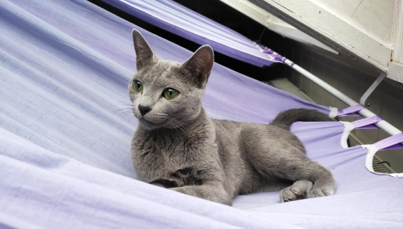

My Little Poli
O poli
Charakteristika
Fotky

Polina - ruská moudrá kočka
Poli se narodila 20. května 2019 v prvním vrhu ruské modré kočky Lindy Mollis Felis v Českých Heřmanicích. Netrvalo diouho a její velké zelené oči a elegantní křivky přilákaly první zájemce. Slovo dalo slovo a hned při první návštěvě bylo jasné, že to je ideální kočičí parťák na dlouhé zimní večery. O tři měsíce později už vyrážela Poli na svoje první velké dobrodružství daleko od své kočičí mámy do nové rodiny.